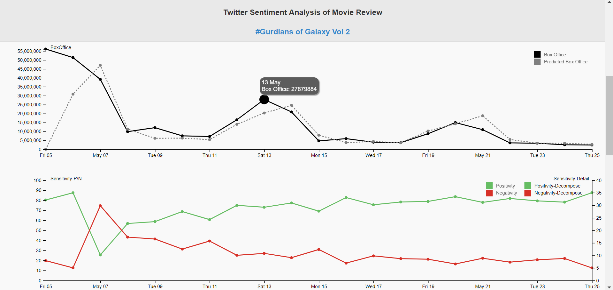

Twitter Sentiment Analysis
Link to Twitter Sentiment Analysis Vis
Questions to Answer:
What is the overall sentiment composition of tweets of “Guardians of the Galaxy 2” since its release?
How does the sentiment change over time on a daily basis?
What is the association between sentiment composition and the box office records?
In this study, we focus on the comments and reviews of the “GardiansofGalaxyVol2” on Twitter, particularly their daily sentiment compositions; we study how they change over time since its first release and how they relate to the next day box office record.
Data Source
We have been using Twitter Streaming API to collect realtime data since Guardians of
the Galaxy 2 was released. We decided to analyze the trend of box office after its
release so we also used OMDB API to collect daily box office data.
Collecting Mechanism
From May 6 2017, we collected 300 tweets that contain hashtag #Guardiansofthegalaxy every day using Twitter Streaming API. We tried to collect 3 times a day and 100 tweets each time in order to enhance the comprehensiveness of our data collection. At the same time, we collected daily box office data at the end of a day. We have collected 21 days’ data and 300 tweets per day. We leveraged a well-established sentiment lexicon corpus to get the sentiment composition of each tweet text. The sentiment lexicon corpus categorizes words in a binary fashion (“yes”/“no”) into categories of positive, negative, anger, anticipation, disgust, fear, joy, sadness, surprise, and trust.
Design Elements:
- The first part of visualization is performance timeline including box office and predicted box office together with sensitivity details.
- When hovering through each point, you could see the details about the performance score in this time.
- When clicking on the 'Decompose' button in sensitivity line chart, you could see the detailed sensitivity value in each sensitivity group (positive or negative). 
- The second part of visualization includes key word cloud and donut chart about sentivity score.
- By clicking on each part of color legend in donut chart, you could easily remove that sentivity type and see the remaining scores.
- The last of visualization is about Twitter Sentiment Details.
- We rank the emotion by % of Total words and show example words and most frequently used hashtags.
Design Elements:
Design Elements: